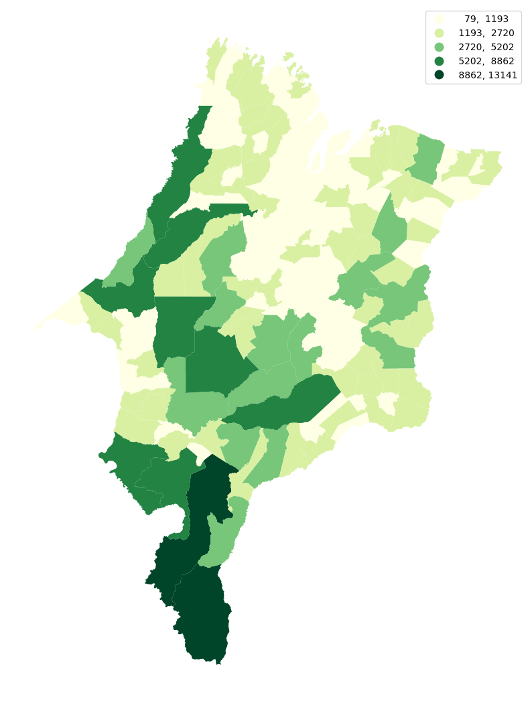

import geopandas as gpd
import mapclassify
ma = gpd.read_file("../data/MA_Municipios_2022.zip")
ma
| CD_MUN | NM_MUN | SIGLA_UF | AREA_KM2 | geometry | |
|---|---|---|---|---|---|
| 0 | 2100055 | Açailândia | MA | 5805.159 | POLYGON ((-47.40208 -5.03469, -47.47673 -5.046... |
| 1 | 2100105 | Afonso Cunha | MA | 371.338 | POLYGON ((-43.28145 -4.31924, -43.42924 -4.223... |
| 2 | 2100154 | Água Doce do Maranhão | MA | 442.292 | POLYGON ((-42.17657 -2.84415, -42.17639 -2.844... |
| 3 | 2100204 | Alcântara | MA | 1167.964 | MULTIPOLYGON (((-44.57175 -2.21957, -44.56274 ... |
| 4 | 2100303 | Aldeias Altas | MA | 1942.121 | POLYGON ((-43.36510 -4.64627, -43.36676 -4.644... |
| ... | ... | ... | ... | ... | ... |
| 212 | 2112803 | Viana | MA | 1166.745 | POLYGON ((-45.01946 -3.27966, -45.01933 -3.279... |
| 213 | 2112852 | Vila Nova dos Martírios | MA | 1190.008 | POLYGON ((-48.11625 -5.26522, -48.11834 -5.265... |
| 214 | 2112902 | Vitória do Mearim | MA | 716.719 | POLYGON ((-44.92336 -3.71341, -44.92354 -3.712... |
| 215 | 2113009 | Vitorino Freire | MA | 1193.385 | POLYGON ((-45.26219 -4.13840, -45.26175 -4.139... |
| 216 | 2114007 | Zé Doca | MA | 2140.109 | POLYGON ((-45.66195 -3.33863, -45.66955 -3.338... |
217 rows × 5 columns
mapclassify.EqualInterval(ma['AREA_KM2'], k=5)
EqualInterval
Interval Count
----------------------------
[ 79.21, 2691.60] | 190
( 2691.60, 5303.99] | 17
( 5303.99, 7916.38] | 5
( 7916.38, 10528.77] | 3
(10528.77, 13141.16] | 2
mapclassify.Quantiles(ma['AREA_KM2'], k=5)
Quantiles
Interval Count
----------------------------
[ 79.21, 447.17] | 44
( 447.17, 743.53] | 43
( 743.53, 1166.17] | 43
( 1166.17, 1928.88] | 43
( 1928.88, 13141.16] | 44
mapclassify.JenksCaspall(ma['AREA_KM2'], k=5)
JenksCaspall
Interval Count
----------------------------
[ 79.21, 591.62] | 63
( 591.62, 1144.15] | 65
( 1144.15, 2284.22] | 57
( 2284.22, 4837.17] | 19
( 4837.17, 13141.16] | 13
o natural breaks é mais proximo desse aqui
mapclassify.FisherJenks(ma['AREA_KM2'], k=5)
FisherJenks
Interval Count
----------------------------
[ 79.21, 1193.38] | 136
( 1193.38, 2720.27] | 55
( 2720.27, 5201.93] | 16
( 5201.93, 8861.72] | 8
( 8861.72, 13141.16] | 2
cl = mapclassify.FisherJenks(ma['AREA_KM2'], k=5)
cl
FisherJenks
Interval Count
----------------------------
[ 79.21, 1193.38] | 136
( 1193.38, 2720.27] | 55
( 2720.27, 5201.93] | 16
( 5201.93, 8861.72] | 8
( 8861.72, 13141.16] | 2
type(cl)
mapclassify.classifiers.FisherJenks
ax = ma.plot(
column="AREA_KM2", # Data to plot
scheme="naturalbreaks", # Classification scheme
cmap="YlGn", # Color palette
legend=True, # Add legend
legend_kwds={"fmt": "{:.0f}"}, # Remove decimals in legend
figsize=(10,100)
)
ax.set_axis_off();

Referências
https://geographicdata.science/book/notebooks/05_choropleth.html